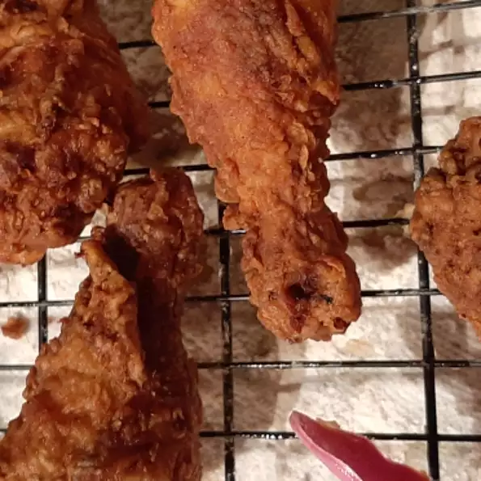

Fried Chicken

Bla bla bla bla this is a recipe about how to make friend chicken. Once you
know how to make fried chicken, you are set. This recipe is simple, easy, and
you should feel free to make it for Walid at any time. Test filler text bla bla
bla bla.
Ingredients
- 4 lb. chicken, cut up
- 1 cup buttermilk
- 2 cups flour
- 1 tsp paprika
- salt and pepper
- 2 quarts veg oil
Steps
- Cut chicken. Put flour in bag with seasoning, paprika, salt/pepper.
- Dip chicken in buttermilk, then in bag w/ flower.
Put on cookie tray, cover with wax paper.
Let flower get to paste consistency.
- Fill skillet. Half oil half water. Make boil. Brown chicken in hot oil. Reduce heat
and cover when brown. Let cook for 30 min. Repeat until crispy.
- Drain onto paper towels. Repeat steps if need be.